(02) drifting grating: (16, 20.0)#
project = iP-VAE, host = chewie, device = cuda:0
Motivation:
Show code cell source
# HIDE CODE
import os, sys
from IPython.display import display
# tmp & extras dir
git_dir = os.path.join(os.environ['HOME'], 'Dropbox/git')
extras_dir = os.path.join(git_dir, 'jb-progress-2025/_extras')
fig_base_dir = os.path.join(git_dir, 'jb-progress-2025/figs')
tmp_dir = os.path.join(git_dir, 'jb-progress-2025/tmp')
# GitHub
sys.path.insert(0, os.path.join(git_dir, '_IterativeVAE'))
from figures.analysis import plot_convergence
from figures.imgs import plot_weights
from figures.fighelper import *
from main.train import *
# warnings, tqdm, & style
warnings.filterwarnings('ignore', category=DeprecationWarning)
warnings.filterwarnings('ignore', category=FutureWarning)
warnings.filterwarnings('ignore', category=UserWarning)
from rich.jupyter import print
%matplotlib inline
set_style()
from utils.animation import show_movie
device_idx = 0
device = f'cuda:{device_idx}'
print(f"device: {device} ——— host: {os.uname().nodename}")
device: cuda:0 ——— host: chewie
Load trainer#
model_name = 'poisson_vH16_t-16_z-[512]_cl-10,10_<grad|lin>'
fit_name = 'b200-ep300-lr(0.005)_beta(20:0.1)_temp(0.01:0.5)_gr(500)_(2025_03_02,16:19)'
tr, meta = load_model(f"{model_name}/{fit_name}", device)
meta['checkpoint']
300
%%time
kws = dict(
seq_total=10000,
seq_batch_sz=1000,
n_data_batches=3,
)
results = tr.analysis('vld', **kws)
_ = plot_convergence(results, color='k')
100%|███████████████████████████████████| 3/3 [00:59<00:00, 19.82s/it]
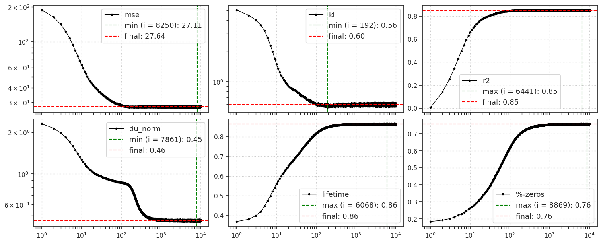
CPU times: user 1min 14s, sys: 4.93 s, total: 1min 19s
Wall time: 1min 19s
w = tr.model.layer.get_weight()
histplot(w.ravel());
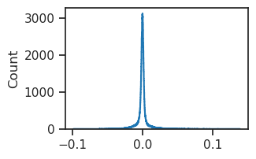
w.std()
tensor(0.0102, device='cuda:0')
Make feeder#
n_frames_for_full_cycle = 500
n_cycles_per_image = 4
feeder_kws = dict(
npix=16,
#
theta=0.0,
s_freq=n_cycles_per_image,
t_freq=1 / n_frames_for_full_cycle,
contrast=np.linspace(0.4, 1.0, 64),
normalize_coords=True,
#
device=device,
flatten=True,
)
feeder = FEEDER_CLASSES['drifting-grating'](**feeder_kws)
n_trials = 30
seq = range(n_frames_for_full_cycle * (n_trials + 1))
print(seq)
range(0, 15500)
Xtract ftrs#
%%time
output = tr.model.xtract_ftr(
feeder=feeder,
seq=seq,
return_extras=['samples', 'u', 'v', 'r2'],
).stack()
CPU times: user 28.1 s, sys: 630 ms, total: 28.8 s
Wall time: 28.8 s
spks = tonp(output['samples'][:, -1].ravel()).astype(int)
fig, ax = create_figure()
histplot(spks, bins=np.linspace(0, 51, 52) - 0.5)
ax.set(yscale='log')
plt.show()
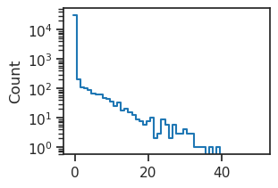
u_norm = tonp(torch.linalg.norm(output['u'], axis=-1))
v_norm = tonp(torch.linalg.norm(output['v'], axis=-1))
r_norm = tonp(torch.linalg.norm(torch.exp(output['u']), axis=-1))
fig, axes = create_figure(1, 2)
axes[0].plot(u_norm[-1], ls='-', label='u - contrast = 1.0')
axes[0].plot(u_norm[0], label='u - contrast = 0.4')
axes[1].plot(r_norm[-1], ls='-', label='r - contrast = 1.0')
axes[1].plot(r_norm[0], label='r - contrast = 0.4')
add_legend(axes)
plt.show()
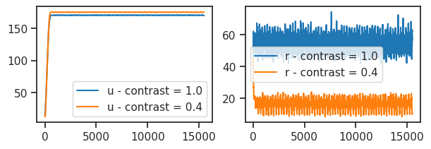
fig, ax = create_figure(1, 1, (6, 2.7))
intvl = range(1000, 1500)
ax.plot(r_norm[-1][intvl], ls='-', label='contrast = 1.0')
ax.plot(r_norm[0][intvl], label='contrast = 0.4')
add_legend(ax)
move_legend(ax, bbox=(1, 1.04))
plt.show()
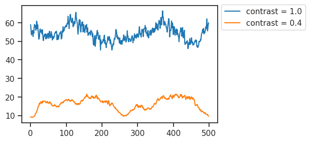
Most responsive neurons#
firing_rates = torch.exp(output['u'])
r_norms_time = torch.linalg.norm(firing_rates, dim=1)
firing_rates.shape, r_norms_time.shape
(torch.Size([64, 15500, 512]), torch.Size([64, 512]))
contrast_i = -1
most_active_neurons = np.argsort(tonp(
r_norms_time[contrast_i]
))[::-1]
neuron_i = most_active_neurons[0]
plot(firing_rates[-1, :, neuron_i])
[<matplotlib.lines.Line2D at 0x7f4e62cc7cd0>]
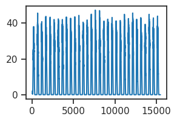
tr.model.show(order=most_active_neurons);
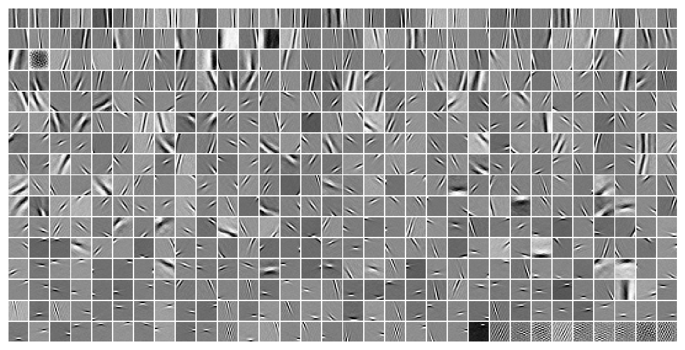
which_neuron = 4
spks_high_contrast = tonp(output['samples'][-1, :, most_active_neurons[which_neuron]])
spks_low_contrast = tonp(output['samples'][0, :, most_active_neurons[which_neuron]])
spks_low_contrast.shape, spks_high_contrast.shape
((15500,), (15500,))
intvl = range(400, 700)
fig, ax = create_figure(1, 1, (6, 3))
ax.plot(intvl, spks_high_contrast[intvl], color='k', label='high contrast')
ax.plot(intvl, spks_low_contrast[intvl], color='C1', label='low contrast')
# ax.axvline(500, color='dimgrey', ls='--', label='stimulus onset')
ax.legend(fontsize=13)
ax.grid()
plt.show()
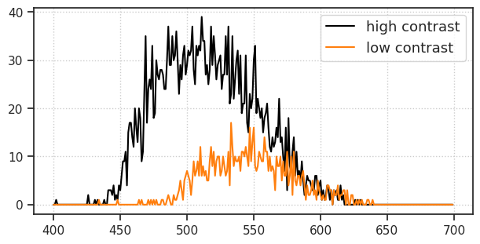
w = tonp(tr.model.layer.get_weight())
w = w.T.reshape(-1, 16, 16)
num = 16
num_skip = 6
x2p = np.concatenate([
w[most_active_neurons[:num]],
w[most_active_neurons[-num-num_skip:-num_skip]],
], axis=0)
plot_weights(x2p, nrows=2)
plt.show()
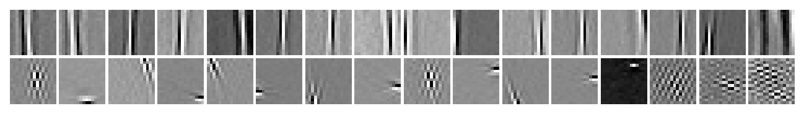
intvl = range(400, 700)
fig, ax = create_figure(1, 1, (4.7, 3))
ax.plot(intvl, spks_high_contrast[intvl], color='k', label='high contrast')
ax.plot(intvl, spks_low_contrast[intvl], color='C1', label='low contrast')
# ax.axvline(500, color='dimgrey', ls='--', label='stimulus onset')
ax.legend(fontsize=13)
ax.grid()
plt.show()
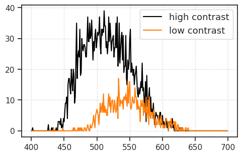
fig, ax = create_figure(1, 1, (20, 3))
plt.plot(spks_high_contrast);
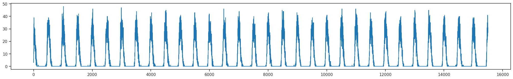
Trial analysis#
Throw away the first 500 timepoints
data = spks_high_contrast[n_frames_for_full_cycle:]
data = data.reshape(-1, n_frames_for_full_cycle)
data.shape
(30, 500)
plt.plot(data.T);
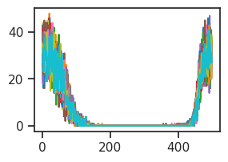
def plot_mean_ci(data, xs=None):
mean = np.mean(data, axis=0)
sem = sp_stats.sem(data, axis=0)
t_val = sp_stats.t.ppf(0.975, data.shape[0] - 1)
ci = sem * t_val
if xs is None:
xs = np.arange(data.shape[1])
plt.plot(xs, mean[xs], color='k')
y1, y2 = mean - ci, mean + ci
plt.fill_between(xs, y1[xs], y2[xs], alpha=0.5)
plt.show()
plot_mean_ci(data)
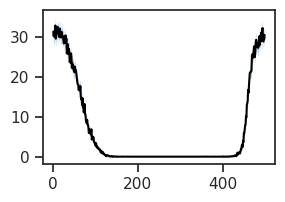
fig, ax = create_figure(1, 1, (10, 4))
plot_mean_ci(data, range(500))
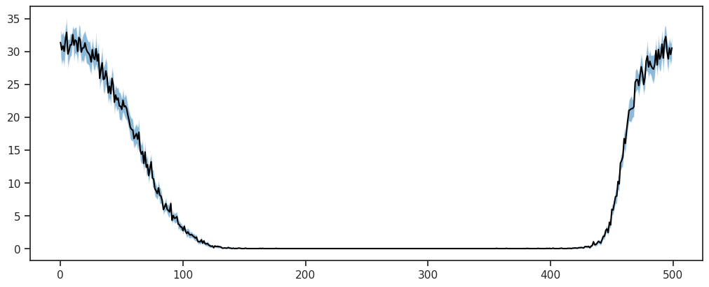
Now actual trials#
n_trials_inner = 10
seq = range(n_frames_for_full_cycle * (n_trials_inner + 1))
print(seq)
range(0, 5500)
%%time
n_trials_outer = 20
data_all = []
for i in tqdm(range(n_trials_outer)):
output = tr.model.xtract_ftr(
feeder=feeder,
seq=seq,
return_extras=True,
).stack()
spks_high_contrast = tonp(output['samples'][-1, :, most_active_neurons[which_neuron]])
data = spks_high_contrast[n_frames_for_full_cycle:]
data = data.reshape(-1, n_frames_for_full_cycle)
data_all.append(data)
data_all = np.stack(data_all, axis=0)
data_all.shape
100%|███████████████████████████████████████████| 20/20 [03:24<00:00, 10.21s/it]
CPU times: user 3min 24s, sys: 22.8 ms, total: 3min 24s
Wall time: 3min 24s
(20, 10, 500)
fig, ax = create_figure(1, 1, (10, 4))
plot_mean_ci(data_all.reshape(-1, n_frames_for_full_cycle), range(300))
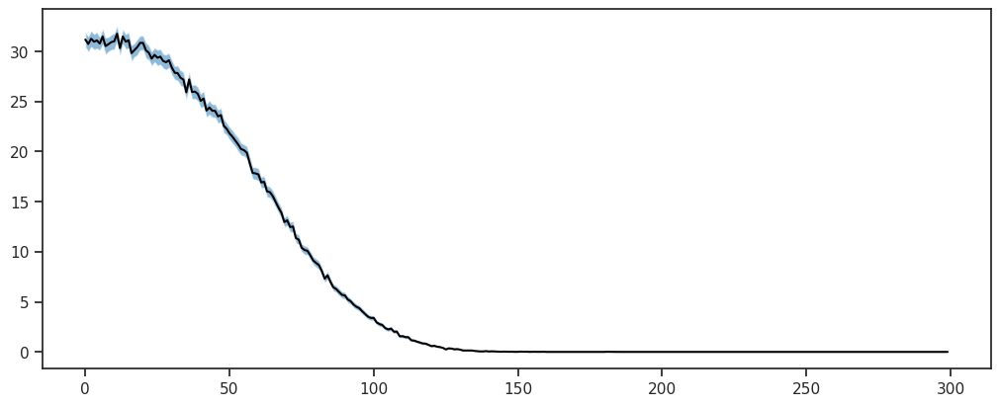
fig, ax = create_figure(1, 1, (10, 4))
plot_mean_ci(data_all.mean(0))
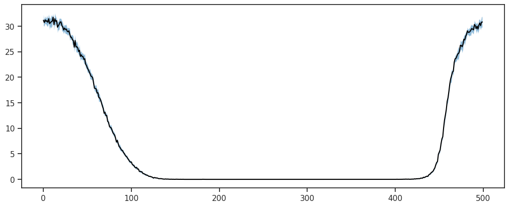
def plot_mu_sd(ax, data, xs=None):
mu = np.mean(data, axis=0)
sd = np.std(data, axis=0)
if xs is None:
xs = np.arange(data.shape[1])
ax.plot(xs, mu[xs], color='k')
y1, y2 = mu - sd, mu + sd
ax.fill_between(xs, y1[xs], y2[xs], alpha=0.5)
return
fig, axes = create_figure(1, 2, (11, 4), 'all', 'all')
plot_mu_sd(axes[0], data_all.reshape(-1, n_frames_for_full_cycle))
plot_mu_sd(axes[1], data_all.mean(0))
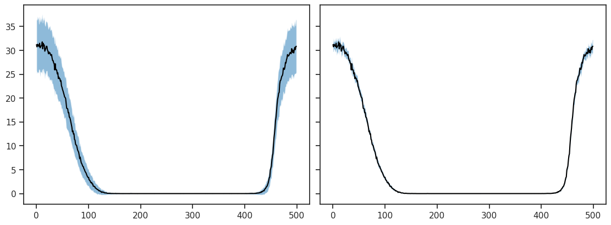